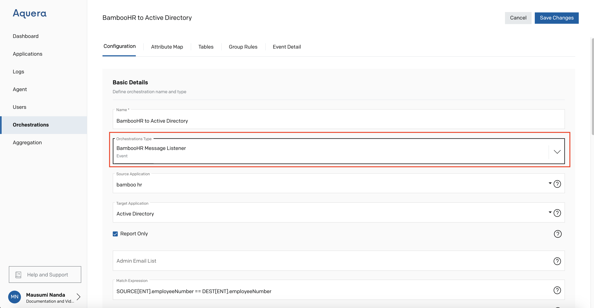
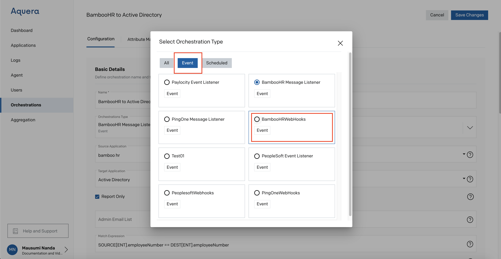
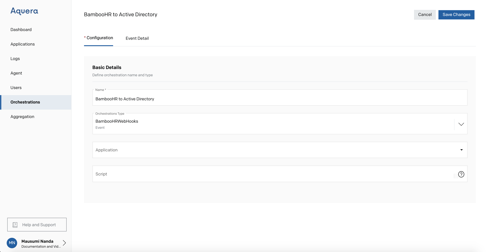
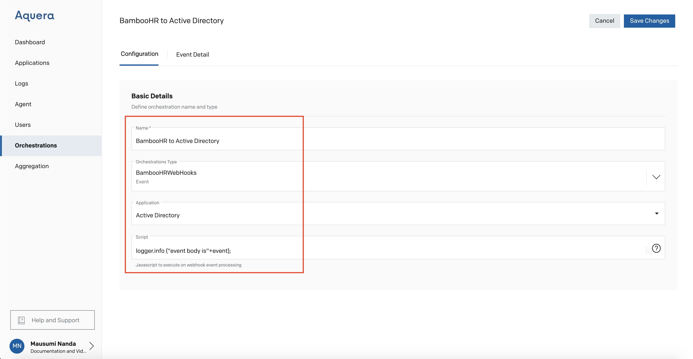
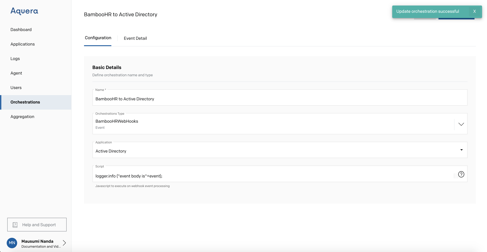
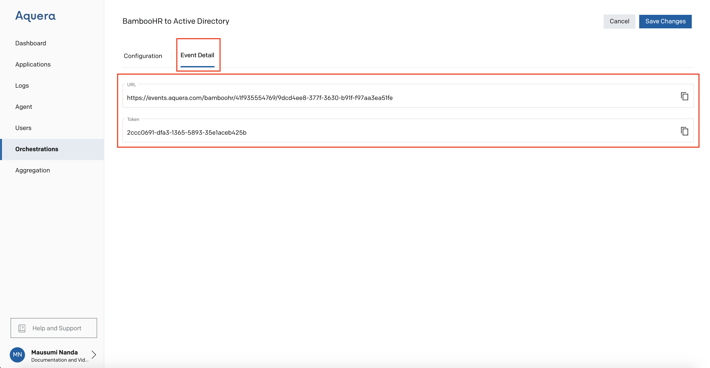
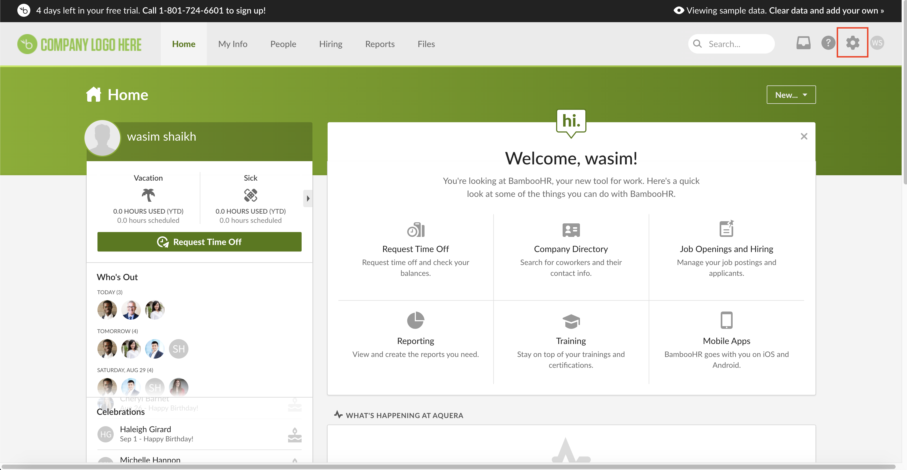
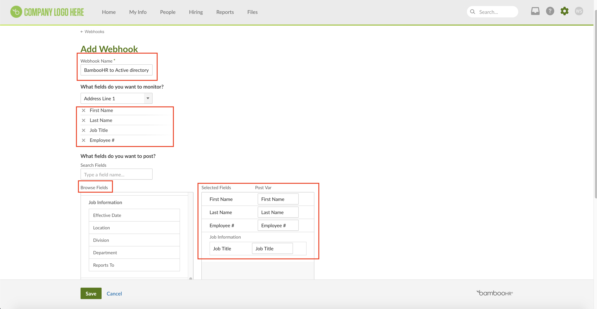
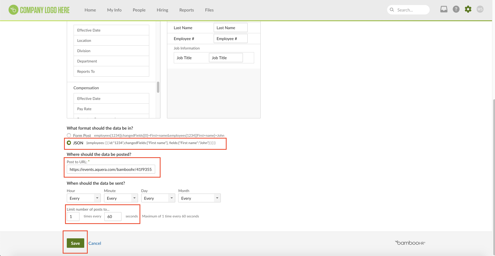

BambooHR Event Listener to Active Directory by Scripts
This guide consists of the following sections
1. What is Event Listener
2. How to Set Up Webhook
a. Event Detail
3. Source Configuration
Event Listener Orchestration Process
What is Event Listener
Event Listener is a type of Orchestration where we can make a change to the Target (Active Directory) via a change to the Source (BambooHR)
How to Set Up the Webhook
Click on Orchestration -> Add Orchestration

Enter a Name for the Orchestration (here it is BambooHR to Active Directory)
Click on BambooHR Event Listener

You get the following screen

Select the dropdown next to BambooHR Event Listener
Then Select the Next Main Tab - Event
Click on BambooHRWebHooks

You get the following screen

Please Enter Active Directory in the Application
Then enter the Script

Then Save Changes
The Orchestration is Successfully saved

Event Detail
The Event Details are displayed, Use this in the below section

The Basic Details are hereby displayed

Source Configuration
Login to the BambooHR portal using your Admin Credentials
You get the following screen, Click on Settings

Click on Webhooks

Click on Add Webhook

Enter a Name for your Webhook, Here it is BambooHR to Active Directory
From the dropdown under 'What fields do you want to monitor'
Please Select the fields as per your requirement like First Name, Last Name, Job Title, and Employee #
Select the very same fields from the dropdown under 'What fields do you want to post'
Hence both the fields should be the same in the dropdown

Select 'Json' from the options placed under 'What format should the data be in'
Copy URL from the Aquera's 'Event Detail' page and paste the same in the specified box on the BambooHR page. At the end of the URL, add ?key=
User can select the time limit. Here it is selected as '1 time at every 60 seconds'.

Then Click Save
The User can see the newly created Webhook

Click on People, User can update the data here, in BambooHR. It will be reflected automatically on the Active Directory Instance.
You have to send an email to support@bamboohr.com
to enable the Webhooks in BambooHR